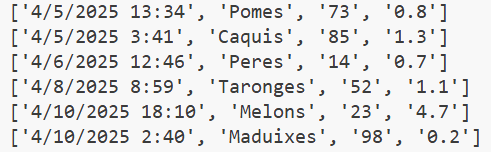
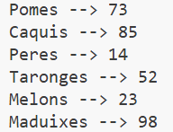
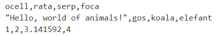
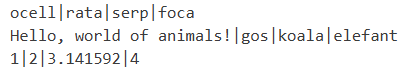
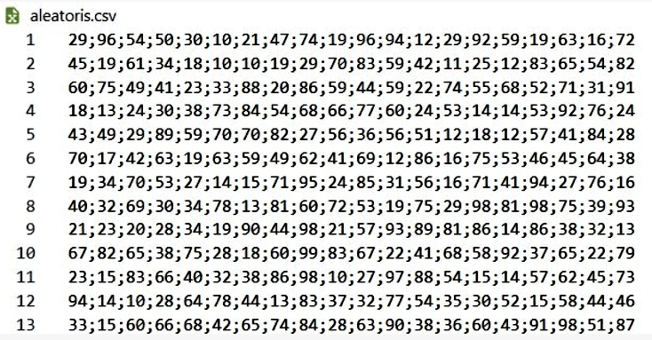

11. Gestió de dades en arxius
11.1 Lectura de dades d'un CSV
Un arxiu CSV (Comma Separated Values) conté dades organitzades per files en les quals la informació se separa normalment mitjançant comes (encara que es poden utilitzar altres caràcters de separació). S'solen utilitzar molt en informàtica per a guardar i processar gran quantitat de dades, ja que són fitxers que ocupen molt poc (arxius de text pla) i que són compatibles amb totes les plataformes (Windows, MacOS, Linux …).
L'exemple següent mostra un arxiu que emmagatzema informació sobre una comanda de fruites. Cada fila conté, separat per comes ,:
- la data i hora de la comanda
- la fruita
- un enter que indica la quantitat de peces sol·licitades
- un nombre real que és el preu per unitat d'aquesta fruita

Si volem llegir i processar les dades d'un arxiu CSV necessitem realitzar els següents passos:
- Importar el mòdul
csvque ens permetrà usar funcions específiques per al processament d'arxius CSV - Obrir l'arxiu CSV que volem processar mitjançant la funció incorporada
open()i guardar l'objecte que aquesta crea en una variable - Utilitzar la funció
csv.reader()sobre la variable creada per a obtindre unobjetode tipusreaderque podrem iterar per a anar llegint fila a fila tot l'arxiu CSV
import csv
arxiu = open('fruites.csv')
arxiu_reader = csv.reader(arxiu)
Una vegada creat l'objecte iterable, el podem recórrer amb un bucle for-in que ens tornarà, en cada iteració del bucle, una llista amb les dades de cada fila.
for fila in arxiu_reader:
print(str(fila))

La llista fila, en cada iteració, contindrà la informació d'una de les fruites de la comanda. Podem accedir als diferents valors de la llista mitjançant indexació per a extraure les dades que ens interessen.
for fila in arxiu_reader:
fruita = fila[1]
unitats = int(fila[2])
print(fruita + ' --> ' + str(unitats))

En funció del tipus de dades, haurem de fer el canvi de tipus corresponent per a poder tractar les dades correctament (int(), str(), float() …).
És important saber que només es pot iterar l'objecte reader una vegada. Per a tornar a llegir l'arxiu CSV, s'ha de tornar a cridar a open() i csv.reader() per a crear un altre objecte reader.
Una precaució que s'ha de tindre quan es treballa amb arxius, és tancar qualsevol referència a aquests una vegada acabem de processar-los (en llegir-los i especialment en escriure'ls). Per a això simplement cridarem al mètode close() de l'objecte sobre el qual es va obrir l'arxiu.
arxiu.close()
11.2 Escriptura de dades en un CSV
Si volem guardar dades utilitzades pel nostre programa Python per a un posterior processament o per a compartir-les, podem emmagatzemar-les en un fitxer CSV.
Els passos que haurem de seguir són:
- Importar el mòdul
csvque ens permetrà usar funcions específiques per al processament d'arxius CSV - Obrir en mode escriptura
'w'l'arxiu CSV en el qual volem guardar les dades mitjançant la funcióopen(archivo, ‘w’, newline=’’)i guardar l'objecte que aquesta crea en una variable - Utilitzar la funció
csv.writer()sobre la variable creada per a obtindre unobjetode tipuswriterque podrem usar per a anar guardant llistes (línia a línia).
import csv
arxiu = open('animals.csv', 'w', newline='')
arxiu_writer = csv.writer(arxiu)
En Windows, s'ha de passar una cadena en blanc com a argument de newline=’’ en la funció open(). Si s'oblida això, les files de l'arxiu CSV es mostraran a doble espai.
Una vegada creat l'objecte writer, utilitzarem la seua funció writerow() per a emmagatzemar una llista en l'última fila de l'arxiu.
arxiu_writer.writerow(['ocell', 'rata', 'serp', 'foca'])
arxiu_writer.writerow(['Hello, world of animals!', 'gos', 'koala', 'elefant'])
arxiu_writer.writerow([1, 2, 3.141592, 4])
arxiu.close()

D'aquesta manera, els valors de la llista es guardaran separats per comes ,. Recordeu que és molt important tancar l'ús de l'arxiu una vegada acabeu d'usar-lo close(). En alguns llenguatges de programació és just en aquest moment en el qual l'arxiu s'actualitza amb els canvis realitzats. Per la qual cosa és bona pràctica acostumar-se a tancar-lo sempre, amb independència del llenguatge usat.
Si en lloc de tindre els valors del CSV separats per comes , els voleu guardar amb un altre delimitador, podeu indicar-ho amb la propietat delimiter de la crida a csv.writer().
arxiu_tab = open('animals_tab.csv', 'w', newline='')
arxiu_writer = csv.writer(arxiu_tab, delimiter='\t')
arxiu_writer.writerow(['ocell', 'rata', 'serp', 'foca'])
arxiu_writer.writerow(['Hello, world of animals!', 'gos', 'koala', 'elefant'])
arxiu_writer.writerow([1, 2, 3.141592, 4])
arxiu_tab.close()

arxiu_linia = open('animals_linia.csv', 'w', newline='')
arxiu_writer = csv.writer(arxiu_linia, delimiter='|')
arxiu_writer.writerow(['ocell', 'rata', 'serp', 'foca'])
arxiu_writer.writerow(['Hello, world of animals!', 'gos', 'koala', 'elefant'])
arxiu_writer.writerow([1, 2, 3.141592, 4])
arxiu_linia.close()

EXERCICIS
1. Fruites
Crea un programa que llija les dades de la comanda de l'arxiu fruites.csv i mostre per pantalla el resum de la comanda de la manera següent EXACTAMENT.
//---------------------- COMADA ----------------------//
# 1 --> Pomes: 112 * 0.8€/u = 89.60000000000001
# 2 --> Caquis: 85 * 1.3€/u = 110.5
# 3 --> Peres: 144 * 0.7€/u = 100.8
# 4 --> Llimes: 52 * 1.1€/u = 57.2
# 5 --> Melons: 23 * 4.7€/u = 108.10000000000001
----------------------- TOTAL -----------------------
Nombre total de peces: 416
Cost total: 466.20000000000005 €
//----------------------------------------------------//
2. Aleatoris
Implementa un programa que guarde en un CSV 50 línies que incloguen, cada una, 20 nombres enters aleatoris de 2 dígits separats per punt i coma ;.

3. Fruites Nou
Crea un nou arxiu “fruitesNou.csv” a partir de “fruites.csv”, que continga la següent informació.
FRUITA|UNITATS|PREU
Pomes|112|0.96
Caquis|85|1.56
Llimes|52|1.32
Melons|23|5.64
Els preus s'han incrementat en un 20% i no inclou les peres.